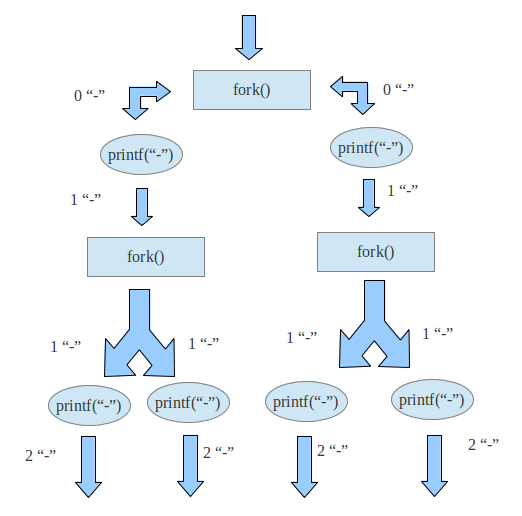
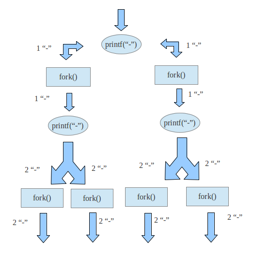

面试机考题目
判断那些会编译报错，阐述原因
1 | |
分析下面这段代码的输出结果
1 | |
输出结果为 13121142222
“直接初始化”或“函数风格的初始化”
在 C++ 中，我们可以使用“直接初始化”或“函数风格的初始化”来创建和初始化对象。这种初始化方式使用一对圆括号描述类型和初始值，并且不需要使用等号。
例如，我们可以使用以下代码行来创建和初始化一个整数变量：
1 | |
在这个例子中，我们使用 int 作为类型名，使用 i 作为变量名，然后将初始值 42 放在圆括号中。这种形式的初始化可以与其他语言中的构造函数调用方式相对应。
类也可以使用这种初始化方式。如果有一个名为 MyClass 的类，我们可以使用以下代码行来创建和初始化一个 MyClass 类型的对象：
cpp
MyClass obj(“Hello World”);
在这个例子中，我们使用 MyClass 作为类型名，使用 obj 作为变量名，然后将初始值 “Hello World” 放在圆括号中。这将调用 MyClass 的带有一个字符串参数的构造函数来创建一个新的 MyClass 对象。
需要注意的是，直接初始化与括号初始化（braced initialization）有所不同，后者使用了一对花括号 {} 来包围要初始化的值。括号初始化在 C++11 中引入，可以用于静态数组和类类型的聚合体。
总的来说，“直接初始化”或“函数风格的初始化”是 C++ 中创建和初始化对象的一种简洁方式，可以帮助我们更容易地编写代码并减少错误。
下面的两行代码都能正常执行 ？？？
1 | |
转义字符
1 | |
上面代码的输出结果分别为
26.
strlen(pStr) = 1
26.
strlen(pStr) = 2
26.
strlen(pStr) = 1
49.
strlen(pStr) = 4
这里输出的 49 是1的 ASCII，\032 是26.
分析这段代码的输出结果
1 | |
结果 2, 5
32位设备下，下面哪个程序输出值最大?
题目
1 | |
12
8
6
12
4
内存对齐规则
在没有#pragma pack这个宏的声明下，遵循下面三个原则：
1、第一个成员的首地址为0.
2、每个成员的首地址是自身大小的整数倍
3、结构体的总大小，为其成员中所含最大类型的整数倍。
- 数据类型自身的对齐值： 对于char型数据，其自身对齐值为1，对于short型为2，对于int,float,double类型，其自身对齐值为4，单位字节；
- 结构体或者类的自身对齐值：其成员中自身对齐值最大的那个值；
- 指定对齐值：#pragma pack (value)时的指定对齐值value，32位机器默认为4,64位机器默认为8；
- 数据成员、结构体和类的有效对齐值：自身对齐值和指定对齐值中小的那个值。
1 | |
分析这段代码的输出结果
1 | |
输出结果为：12
判断字符串的长度&转义字符的使用
1 | |
3
8
判断下面代码的输出结果
1 | |
输出结果为：
A Construct
this is A func_init
B Construct
this is B func_init
B Destruct
this is B func_deinit
A Destruct
this is A func_deinit
与192.168.1.110/27属于同一个子网的主机地址
根据给定的IPv4地址192.168.1.110和子网掩码/27，我们可以确定网络的范围。在IPv4中，子网掩码用于划分IP地址中的网络部分和主机部分。
对于给定的子网掩码/27，它表示前27位是网络部分，剩下的5位是主机部分。换算为二进制，子网掩码为11111111.11111111.11111111.11100000。
将IP地址192.168.1.110和子网掩码进行按位与操作，可以得到网络地址：192.168.1.96。因此，与192.168.1.110/27属于同一个子网的主机地址范围是从 [192.168.1.97, 192.168.1.126]
tip: 110 的二进制是 0110 1110，前三位是 011，即 0x60=96，0x7F=127
- 子网掩码：255.255.255.224
- 192.168.1.96 网段
- 192.168.1.127 广播段
- 192.168.1.97 - 192.168.1.126 IP地址
使用基数排序对十进制正整数数据序列43,231,96,190,239进行升序排序，低位优先，堆数为10，排序过程中可能的中间序列为
43,231,96,190,239 -> 190,231,43,96,239 -> 231,239,43,190,96 -> 43,96,190,231,239
甲、乙、丙、丁、戊、己六人进行兵乓球比赛，采用单循环制。现在知道:甲、乙、丙、丁、戊五人已经分别赛过5、4、3、2、1场。问:这时己已经赛过几场
模拟：
甲:5 0
乙:4 3 0
丙:3 2 1 0
丁:2 1 0 0
戊:1 0 0 0
己:x x-1 x-2 x-3
5+3+1=9
所以现在已经进行了9场比赛
在没有秒表统计的前提下，如果要从25马中选出跑得最快的3匹，每次只能有5匹马同时跑，最少要比赛多少次，才能确保得出结果? (请给出推演过程，直接给出答案的不得分。)
25匹马看成25个点，每次比赛在参赛的5匹马之间引入4条有向边，1->2->3->4->5，数字表示参赛马的成绩排名。这样最后能形成一个有向无环图, 我们需要得到的是前三名的节点a, b, c, 其中a->b->c, 并且c是剩余节点的祖先。六次比赛（分5组各自比赛，之后后每组的第一名比赛）之后，所有的节点已经连成了一个二叉堆，根节点是第一名。只需要让左右子堆的顶点和它们的子节点一起再比一次，就能决出2，3名。

xy，mn各表示一个两位数，若xy+mn=119，则x+y+m+n=
y+n 必为9，x+m 则为11
20
分析下面这段代码的运行结果
1 | |
关于linux内存空间
A、内核空间和用户空间都属于虚拟内存空间：
在现代操作系统中，使用虚拟内存的概念将内存空间划分为内核空间和用户空间。虚拟内存使得每个进程都有自己独立的地址空间，从而提供了更高的安全性和隔离性。内核空间是保留给操作系统内核使用的区域，包含了操作系统的代码和数据结构。用户空间是给应用程序和用户代码使用的区域。
B、内核空间存放的是内核的代码和数据，用户空间存放的是用户的代码和数据：
内核空间是操作系统内核运行的地方，其中保存了内核的代码和数据结构，用于管理系统资源和提供各种服务。用户空间是给应用程序和用户代码运行的地方，其中保存了用户的代码和数据，包括应用程序的逻辑、变量、堆栈等。
C、每个进程有4G的独立内存空间，这4G内存空间相对其他进程都是不可见的：
每个进程在虚拟内存中都有自己独立的4GB内存空间（在32位系统中），这是由于操作系统使用了分页机制进行地址映射。不同进程的地址空间彼此隔离，一个进程无法直接访问另一个进程的内存。这种隔离性确保了每个进程的独立性和安全性。
D、每个进程都可以通过系统调用进入内核，内核为系统中的所有进程共享：
进程可以通过系统调用（例如读写文件、创建进程等）进入内核执行特权操作。内核是为系统中的所有进程提供服务和资源管理的关键部分。虽然内核是共享的，但内核通过进程上下文切换来确保不同进程之间的隔离和资源互斥，避免了冲突和干扰。
运算优先级
1 | |
根据C++中运算符的优先级和结合性规则，表达式a += a * a << 1 + 2的计算顺序如下：
- 首先计算 a * a ，得到16。
- 然后计算 1 + 2 ，得到3。
- 接着计算 16 << 3 ，即将16的二进制表示向左移动3位，并在右侧添加零来填充，得到128。
- 最后计算 a += 128 ，即将变量 a 的值加上128，并将结果赋给变量 a。
所以最终 a=132
分析代码输出结果
1 | |
在这段代码中，将一个无符号短整型常量200强制转换为字符类型，并将结果赋给变量a。然后使用printf函数以%d的格式打印变量a的值。
根据C语言的类型转换规则，将无符号短整型constant 200 转换为字符类型(char)时，会进行截断操作。由于char类型通常是一个字节大小，范围为-128到127，因此200在char类型下将被解释为-56。
虚拟存储技术
虚拟存储技术（Virtual Memory）是计算机操作系统中的重要概念，它提供了一种将主存（RAM）和辅助存储设备（如硬盘）结合起来使用的方法。使用虚拟存储技术，操作系统可以将主存空间扩展到比实际可用物理内存更大的范围。
虚拟存储技术的主要目的是使每个程序能够在自己的地址空间中运行，并且互相隔离，从而增加了计算机系统的可靠性和安全性。
以下是虚拟存储技术的一些关键特点和工作原理：
虚拟地址空间：每个正在运行的程序都有自己的虚拟地址空间，它是一个抽象的地址空间，包含程序代码、数据、堆栈等部分。这个地址空间通常比实际物理内存的大小要大。
分页机制：虚拟存储采用了分页机制，将虚拟地址空间划分为大小相等的页面（Page）。物理内存也被划分为与页面大小相同的块，称为物理页框（Physical Page Frame）。
页面置换：由于虚拟地址空间比实际可用的物理内存大，不是所有的页面都可以同时放入物理内存中。当程序访问一个虚拟页时，如果该页不在物理内存中，则会触发页面置换算法，将其中一个物理页替换出来，然后将所需的虚拟页加载到该物理页中。
页表：为了跟踪虚拟地址到物理地址的映射关系，操作系统维护了一个页表（Page Table），其中记录了每个虚拟页对应的物理页框的地址。
页面调度算法：页面调度算法决定了哪些页面会被置换出去以空出物理内存，常见的算法包括最近最少使用算法（LRU）、先进先出算法（FIFO）等。
虚拟存储技术优点包括：
- 允许程序拥有比物理内存更大的地址空间，使得可以运行更大规模和复杂度的程序。
- 提供了更好的内存管理，允许多个程序同时运行而彼此独立，提高系统的可靠性和安全性。
- 允许操作系统使用辅助存储设备作为内存的扩展，缓解了物理内存的限制，并提高了系统的性能。
总而言之，虚拟存储技术允许操作系统通过一种抽象的机制，为每个程序提供独立的地址空间，使得更多的程序可以运行在有限的物理内存上，并提供了更好的内存管理和保护机制，从而提高了计算机系统的性能和可靠性。
根据初始关键字序列(19，22，01，38，10)建立的二叉排序树的高度
1 | |
判断下面两端代码分别输出多少个 hello world
1 | |
1 | |
关于fork的一道经典面试题
这是一道面试题，问程序最终输出几个“-”：
1 | |
正确答案是8个，关键在于prinf(“-“)只是将字符放到了进程的缓冲区而不输出，而fork在产生子进程的时候，会把父进程的缓冲区也拷贝一遍。如下图所示：

如图，一条箭头表示一个进程，箭头边的0 “-“表示此时该进程的输出缓冲区中没有“-”，1 “-”表示有1个。经过fork后，缓冲区被拷贝，而经过一次prinf，则缓冲区中的“-”增加一个，最终当进程结束的时候，将缓冲区的内容输出。
如果将printf(“-“)换成printf(“-\n”)，或者在printf(“-“)后加一句fflush(stdout),则每次printf的时候就将“-”输出，缓冲区里面不再有东西，这样执行多少次prinf就输出多少次“-”，结果是6次。
如果将fork()与prinf(“-“)交换位置，变成
1 | |
则流程图如下：

结果仍然是8次，最后的fork也是有起作用的，因为只有在进程结束后才会输出缓冲区的内容。
自旋锁的机制和底层原理
自旋锁是一种基本的线程同步机制，用于保护临界区资源以避免并发访问的问题。它的机制和底层原理如下所述：
- 机制：
- 当一个线程尝试获取自旋锁时，如果锁是可用的（未被其他线程占用），该线程会立即获取锁并进入临界区执行。
- 如果锁已经被其他线程占用，那么当前线程将以循环的方式不断尝试获取锁，而不是进入阻塞状态。这个循环被称为自旋，因为线程会在获取锁之前不断地“旋转”。
- 底层原理：
- 自旋锁使用原子操作实现，通常通过 CPU 提供的特殊指令，如 test-and-set 或 compare-and-swap 操作来实现。
- 当一个线程尝试获取自旋锁时，它会使用原子操作来尝试将锁的状态从“未锁定”改变为“锁定”状态。如果成功获取到锁，则可以进入临界区执行。如果失败，它会继续尝试获取锁，直到成功为止。
- 在多核处理器中，每个核心都有自己的缓存，当一个线程尝试获取自旋锁时，它会在自己的缓存中检查锁的状态。如果另一个核心已经修改了锁的状态，那么该线程会通过内存屏障或者缓存一致性协议来保持缓存的一致性，以确保能够正确地检测到锁的状态变化。
需要注意的是，自旋锁适用于临界区很小且锁被占用时间短暂的情况。如果临界区很大或者锁的占用时间较长，使用自旋锁可能会导致线程间的竞争，浪费大量的 CPU 时间。在这种情况下，更适合使用其他的线程同步机制，如互斥锁（mutex）或信号量（semaphore）来避免资源竞争和提高性能。
互斥锁的机制和底层原理
互斥锁（Mutex）是一种常用的线程同步机制，用于保护临界区资源的并发访问。它的机制和底层原理如下所述：
- 机制：
- 互斥锁有两个状态：锁定（locked）和未锁定（unlocked）。
- 当一个线程尝试获取互斥锁时，如果锁是未锁定状态，该线程会获取锁并进入临界区执行。
- 如果锁已经被其他线程锁定，那么当前线程将被阻塞，直到锁被释放为止。多个线程可能会排队等待同一个互斥锁。
- 底层原理：
- 互斥锁通常使用原子操作和操作系统的支持来实现。
- 原子操作用于确保对互斥锁状态的修改是原子的，即不会被其他线程中断。
- 操作系统提供了一些底层同步原语，如 Compare-and-Swap（CAS）、Test-and-Set、Fetch-and-Add（FAA）等，用于实现互斥锁的原子操作。
- 当一个线程尝试获取互斥锁时，它会尝试使用原子操作将锁状态从未锁定改变为锁定状态。如果成功获取到锁，则可以进入临界区执行。如果失败，该线程会被阻塞，直到锁被释放。
- 当线程释放互斥锁时，它会将锁的状态设置为未锁定，这样其他等待获取锁的线程就有机会获取到锁并进入临界区。
需要注意的是，互斥锁能够保证临界区资源的独占访问，避免了竞态条件（Race Condition）的发生。但过多地使用互斥锁可能导致线程间频繁地切换和阻塞，降低系统性能。因此，在设计并发程序时，需要合理选择互斥锁的粒度，并考虑使用其他同步机制，如读写锁（Read-Write Lock）或无锁数据结构，以提高并发性能。
介绍一下线程池
线程池（Thread Pool）是一种用于管理和复用线程的并发编程技术。它由线程池管理器、工作队列和一组工作线程组成。线程池的主要目的是优化线程的创建、销毁和调度过程，以提高系统的性能和资源利用率。
线程池的工作原理如下：
- 创建线程池：
- 在应用程序初始化阶段，创建一个固定数量的工作线程池。
- 线程池管理器会创建并启动指定数量的线程，并将它们置于等待状态，准备接受任务。
- 提交任务：
- 当应用程序需要执行一个任务时，可以将任务提交给线程池。
- 任务被添加到线程池的工作队列中，等待执行。
- 执行任务：
- 工作线程从工作队列中取出任务进行执行。
- 线程池会自动分配任务给空闲的工作线程，避免了频繁地创建和销毁线程的开销。
- 处理完成：
- 当一个任务被执行完成后，工作线程会返回线程池，并继续从工作队列中获取新任务执行。
- 线程池管理器会根据实际情况调整线程的数量，可以增加或减少工作线程的数量。
线程池的优点：
- 提高性能和资源利用率：通过复用线程、避免频繁创建和销毁线程，降低了线程创建和上下文切换的开销，提高了系统的性能和资源利用率。
- 控制并发度：线程池可以限制同时执行的任务数量，避免过多的并发导致系统资源耗尽。
- 更好的管理和监控：线程池提供了监控和管理工具，可以统计线程池的运行状态、异常情况等。
需要注意的是，合理设置线程池的大小和参数是很重要的，过小的线程池可能无法满足并发需求，而过大的线程池可能会导致资源竞争和性能下降。因此，在使用线程池时，需要仔细评估任务的特性和系统的负载，进行适当的配置和调优。
shared_ptr 循环引用的问题
shared_ptr是C++中智能指针的一种类型，用于管理动态分配的对象。它使用引用计数来跟踪指向对象的指针数量，并在没有任何指针引用时自动删除对象。
然而，使用shared_ptr时，可能会出现循环引用的问题，也称为循环依赖。循环引用指的是两个或多个对象在彼此之间相互持有shared_ptr的情况，导致它们的引用计数永远无法达到0，对象也无法被正确地释放。
这种情况通常发生在对象之间存在双向关联的情形下。例如，对象A拥有shared_ptr指向对象B，同时对象B也拥有shared_ptr指向对象A。这样，即使没有其他外部引用，A和B的引用计数也永远不会变为0，导致它们占用的内存无法释放。
为了解决shared_ptr的循环引用问题，可以采用weak_ptr来打破循环依赖。weak_ptr是对shared_ptr的一种弱引用，不会增加对象的引用计数。可以通过将对象之间的循环引用中的某些指针改为weak_ptr来减少引用计数，从而使对象能够在没有其他强引用时被正确释放。
使用weak_ptr时，需要在使用前先将其转换为shared_ptr，并检查对象是否仍然有效。这可以通过调用weak_ptr的lock()方法来实现。如果对象已被释放或无效，lock()将返回一个空的shared_ptr。
总的来说，当使用shared_ptr时，需要小心处理循环引用问题，以确保对象能够正确地释放，避免内存泄漏。通过使用weak_ptr来打破循环依赖，可以解决shared_ptr的循环引用问题。
new/delete 和 malloc/free的异同
new/delete和malloc/free是用于在C++和C语言中进行动态内存分配和释放的一对对应操作。
异同点如下：
语法和类型：new和delete是C++关键字，而malloc和free是C标准库函数。因此，new和delete在C++中使用，malloc和free在C语言中使用。
类型安全性：new和delete在语法上是与类型相关的操作符，能够自动计算所需的内存大小并执行类型转换。它们还会调用构造函数和析构函数来初始化和销毁对象。而malloc和free则是通用的内存分配和释放函数，无法自动执行类型转换和调用构造/析构函数。因此，在C++中，如果需要动态分配和释放对象，建议使用new和delete，以确保类型安全和正确的对象构造和析构。
内存分配方式：new和delete操作符使用的是C++的内存管理机制，可以直接调用全局的operator new和operator delete函数来执行内存分配和释放。而malloc和free函数是C语言中的内存分配函数，使用堆来分配内存。
大小信息：malloc函数需要传递所需内存块的大小，以字节为单位。而new操作符根据所需对象的类型自动计算大小。
返回值：new操作符返回指向分配的对象的指针，而malloc函数返回一个void指针。需要将其显式转换为适当的指针类型。
异常处理：new操作符在内存分配失败时会抛出std::bad_alloc异常，而malloc函数在分配失败时返回NULL。因此，在使用new时，我们可以通过捕获异常来处理内存分配失败的情况，而malloc则需要手动检查返回值是否为NULL。
综上所述，new/delete和malloc/free在功能和用法上有一些区别，尤其是对于C++中的对象分配和释放，建议使用new和delete来确保类型安全和正确的构造/析构行为。
volatile
禁止编译器优化：编译器在优化代码时，会假设变量的值在没有被修改的情况下是不会改变的，从而进行一些优化措施，如寄存器缓存、指令重排等。然而，在某些特定的应用场景中，变量的值可能会被其他线程、中断处理程序或硬件设备修改，这时候编译器的优化可能会导致错误的结果。通过使用 volatile 关键字，可以告诉编译器不要对该变量进行优化，保证读写操作的顺序，并始终从内存中读取变量的最新值。
以下是一些常见的情况下会使用 volatile 的例子：
多线程编程：在多线程环境下，多个线程可能会同时访问同一份数据。如果这些线程之间不通过锁或其他同步机制同步访问，那么就会出现数据竞争的问题。此时，可以使用 volatile 来保证数据的可见性和读写顺序，并防止编译器对变量的优化。
中断处理程序：中断处理程序会在计算机硬件设备发生某些事件时被触发。在中断处理程序中，可能需要读写一些寄存器或内存地址来响应事件。由于中断处理程序和正常程序运行在不同的上下文中，因此需要使用 volatile 关键字来保证对这些变量的读写操作是可见的并且执行顺序符合预期。
访问硬件设备：在与硬件设备通信时，需要使用 volatile 来保证对寄存器或内存地址的读写操作是正确的，并且能够及时更新变量的值。否则，编译器可能会对变量的读写进行优化，从而导致通信错误。
判断 ABCD 的析构顺序
1 | |
析构顺序为 ABDC
介绍一下锁
锁（Lock）是计算机科学中的一种同步机制，用于控制对共享资源的访问。当多个线程或进程试图同时访问共享资源时，锁能够确保每个线程或进程都能够安全地访问共享资源，从而避免竞态条件等问题的发生。
以下是几种常见的锁类型：
- 互斥锁（Mutex）：
- 互斥锁是最基本的一种锁。
- 只有一个线程可以获得互斥锁，其他线程必须等待该线程释放锁。
- 适用于需要独占访问共享资源的情况。
- 读写锁（Read-Write Lock）：
- 读写锁允许多个线程同时读取共享资源，但只允许一个线程进行写操作。
- 当没有线程进行写操作时，多个线程可以同时获取读锁。
- 适用于读操作远远超过写操作的场景，可以提高并发性能。
- 自旋锁（Spin Lock）：
- 自旋锁是一种忙等待的锁，线程会一直循环等待直到获得锁。
- 适用于对共享资源的访问时间非常短暂的场合，避免线程上下文切换的开销。
- 条件变量（Condition Variable）：
- 条件变量是一种同步机制，用于线程之间的通信。
- 当一个线程需要等待某个条件满足时，可以通过条件变量将自己挂起，等待其他线程发送信号或广播来唤醒它。
- 信号量（Semaphore）：
- 信号量是一种同步机制，用于控制对共享资源的访问。
- 信号量可以用来实现互斥锁和读写锁等功能，同时也可以实现进程之间的同步和互斥。
使用锁能够有效地避免多线程程序中的数据竞争和并发访问的问题，确保数据的正确性和线程的安全性。但需要注意，在使用锁时要避免死锁（Deadlock）和饥饿（Starvation）等问题，合理设计锁的粒度和使用方式，以提高程序的性能和可靠性。
什么是栈溢出？怎么避免栈溢出
栈溢出（Stack Overflow）是指当程序在执行过程中，使用了过多的栈空间，超出了栈的大小限制，导致数据溢出到其他内存区域。
在计算机中，每个进程都有一个用于存储局部变量、函数调用和其他临时数据的内存区域，称为栈（Stack）。栈是一种后进先出（LIFO）的数据结构，由一系列内存块组成，用于存储函数调用的上下文信息。
当一个函数被调用时，它的参数、局部变量和返回地址等数据会被压入栈中。而当函数执行完成后，栈上的数据会被弹出，控制权返回给调用者。
栈溢出通常发生在以下情况下：
- 递归调用：
- 如果递归调用没有正确终止条件或递归深度过大，每次递归调用都会将数据压入栈中，导致栈空间耗尽。
- 局部变量过多或过大：
- 当函数中定义了太多的局部变量，或某个局部变量占用的内存空间过大，都会导致栈的空间不足以容纳这些变量。
- 缓冲区溢出：
- 当程序中使用了不安全的输入处理方式，如未对输入进行正确的边界检查，恶意输入数据可能超出预留的缓冲区大小，将多余的数据写入栈中，导致栈溢出。
栈溢出可能会导致程序异常终止、崩溃或者产生安全漏洞。攻击者可以利用栈溢出漏洞来覆盖函数返回地址，执行恶意代码或实施其他攻击。
为防止栈溢出，可以采取以下措施：
- 合理设计递归算法，确保递归深度不会过大。
- 减少函数中的局部变量数量和大小，合理管理内存使用。
- 对用户输入进行严格的边界检查和验证，避免缓冲区溢出。
- 使用编程语言或框架提供的安全函数和工具，如使用安全的字符串处理函数替代容易造成缓冲区溢出的函数。
正确地处理栈的使用可以有效预防栈溢出问题，并提高程序的稳定性和安全性。
设数组S[]=[23,70,62,15,99,50,128,66,48,82,9,136]，采用最低位优先(LSD)基数排序将S排列成升序序列
首先，我们需要确定最大数字的位数，以确定进行多少次排序。在这个数组中，最大的数字是136，它有3位数。因此，我们需要进行3次排序。
第一趟排序：
按照个位数进行排序，数字范围是0到9。具体操作如下：
- 放入桶中：[70, 50], [62, 82], [23], [15], [66, 136], [128, 48], [99, 9]
第二趟排序：
按照十位数进行排序，数字范围是0到9。具体操作如下：
- 放入桶中：[9], [15], [23, 128], [136], [48], [50], [62, 66], [70], [82], [99]
第三趟排序：
按照百位数进行排序，数字范围是0到1。具体操作如下：
- 放入桶中：[9, 15, 23, 48. 50, 62, 66, 70, 82, 99], [128, 136]
最终，数组S被排列成升序序列如下：
[9, 15, 23, 48, 50, 62, 66, 70, 82, 99, 128, 136]
在表达式6＋5*(3*2＋1)-9中，使用栈对表达式进行求值的过程中，当扫描到1时，其对象栈为()
6 5 6
介绍一下红黑树
红黑树（Red-Black Tree）是一种自平衡的二叉搜索树，它在保持二叉搜索树特性的同时，通过引入颜色标记和一些性质约束来保持树的平衡。红黑树具有以下特点：
- 节点的颜色：每个节点被标记为红色或黑色。
- 根节点的颜色：根节点为黑色。
- 叶子节点的颜色：叶子节点（NIL节点或空节点）被视为黑色。
- 红黑性质：
- 任何红色节点的两个子节点都是黑色。
- 从任一节点到其每个叶子的所有路径都包含相同数目的黑色节点（即具有相同的黑色高度）。
通过以上性质，红黑树保证了树的高度近似平衡，最长路径不超过最短路径的两倍。这使得红黑树在插入、删除和查找等操作上具有较好的性能，时间复杂度为O(log n)。
红黑树的操作主要包括插入、删除和查找。插入和删除操作需要进行调整来保持红黑性质，并维护树的平衡。
红黑树的插入操作通过旋转和重新着色来进行调整。具体来说，插入一个新节点后，可能会破坏红黑性质，需要进行以下调整步骤：
- 将插入节点标记为红色。
- 若插入节点的父节点是红色：
- 若插入节点的叔节点（父节点的兄弟节点）也是红色，则将父节点和叔节点变为黑色，将祖父节点变为红色，然后以祖父节点为当前节点向上递归进行调整。
- 若插入节点的叔节点是黑色，或者为空节点（即叶子节点），则根据父节点和当前节点的相对位置进行旋转操作，使之满足平衡要求。
- 根节点始终为黑色。
红黑树的删除操作也通过旋转和重新着色来进行调整。具体来说，删除一个节点后，同样可能会破坏红黑性质，需要进行以下调整步骤：
- 若删除节点是红色节点，直接删除即可。
- 若删除节点是黑色节点，且它的子节点是红色节点，则将子节点染成黑色，并替换删除节点的位置。
- 若删除节点是黑色节点，且它的子节点都是黑色节点，则可能会导致路径上黑色节点数目不等，需要进行进一步调整：
- 若删除节点的兄弟节点是红色，将兄弟节点染成黑色，父节点染成红色，并对父节点进行旋转操作。
- 若删除节点的兄弟节点是黑色，且兄弟节点的两个子节点也都是黑色，则将兄弟节点染成红色，并对父节点进行递归调整。
- 若删除节点的兄弟节点是黑色，且兄弟节点的一个子节点是红色，则通过旋转和重新着色，使之满足平衡要求。
红黑树除了具有二叉搜索树的查找功能外，还能高效地支持范围查询和顺序统计量等操作。
总的来说，红黑树通过颜色标记和一些性质约束来保持树的平衡，具有较好的插入、删除和查找性能。它在很多编程语言的标准库中被广泛应用，如C++的std::map和Java的TreeMap等。
红黑树和AVL树都是自平衡二叉搜索树，但它们在实现方式和自平衡策略上有所不同
- 红黑树：红黑树通过颜色的变换和旋转来进行自平衡。插入和删除操作需要根据情况进行左旋、右旋、变色等操作来保持平衡。
- AVL树：AVL树通过旋转操作来进行自平衡。插入和删除操作可能需要进行左旋、右旋、双旋等操作来保持平衡，并且需要更新各个节点的高度信息。
PID
PID是指比例-积分-微分控制器（Proportional-Integral-Derivative Controller），是一种常用的控制系统设计方法。PID控制器根据误差信号的大小和变化率来调整输出，以使所控制的系统达到期望状态。
PID控制器的工作原理如下：
- 比例（Proportional）：根据当前的误差信号进行调整。比例增益参数Kp决定了输出对误差的敏感度，较大的增益会导致更快的响应速度，但可能引起过冲和震荡。
- 积分（Integral）：累积误差信号，并在一段时间内进行校正。积分增益参数Ki决定了输出对积分误差的敏感度。积分控制用于处理稳态误差，可以消除稳态偏差。
- 微分（Derivative）：根据误差变化率进行调整。微分增益参数Kd决定了输出对误差变化率的敏感度。微分控制用于抑制系统的超调和减小振荡。
PID控制器根据当前的误差信号计算出一个调整量，该调整量与系统的输出值相加，最终形成新的输出值。通过不断地调整PID的参数，可以实现对控制系统的精确控制。
需要注意的是，PID控制器在某些情况下可能无法满足控制要求，例如非线性系统、时变系统等。在这些情况下，可能需要使用其他高级的控制算法来进行控制。